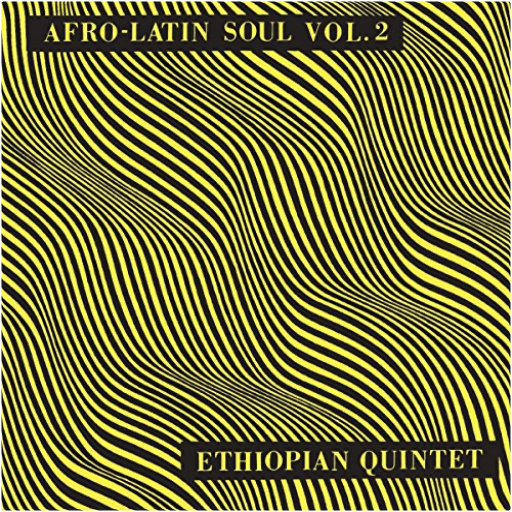

afro latin soul volume 2mulatu astatke  (Volume Two) First official vinyl reissue of groundbreaking 1966 albums from the 'Godfather of Ethiopian Jazz'. A blend of New York Latin & Ethiopian Afro-funk grooves.  introduces marijatapat thomas introduces marijatapat thomas 'Pat Thomas Introduces Marijata' is a seminal Ghanian album that fuses highlife, reggae, folk, funk and soul, from legendary vocalist Pat Thomas. Originally released in 1976 on Gapophone Records. 'Marijata' was a group made up of three members - Kofi 'Electric' Addison on drums, Bob Fischlan on organ and Nat Osmanu on guitar, hailing from Ghana. Pat Thomas career began in 1969 with the 'Broadway Dance Band', leaving a year later to join the 'Uhuru Dance Band'. He then played with Ebo Taylor's 'Blue Monks' and finally formed the 'Sweet Beans' in 1973 where he really made his name. The group released 'False Lover' in 1974, split and then reformed as Marijata, releasing 'Marijata' (also available on Mr Bongo) and this album, 'Pat Thomas Introduces Marijata'.  live & rarerage against the machine live & rarerage against the machine Released only in Japan in 1997, this collection of live and demo tracks - available for the first time on vinyl - is a must for Rage Against The Machine fans! Includes fiery versions of ''Take The Power Back'' and ''Bombtrack,'' covers of N.W.A.'s ''Fuck Tha Police'' and Public Enemy's ''Black Steel In The Hour Of Chaos'' (with Chuck D on lead vocals) and tracks from the band's original 1991 demo tape.  gotta get back: the unreleased l.a. sessionsrobbie hill's family affair gotta get back: the unreleased l.a. sessionsrobbie hill's family affair RSD. Previously unreleased on vinyl. Limited and hand-numbered to 2,000 copies worldwide. Almost 10 years ago, Light in the Attic and DJ Supreme La Rock compiled the first ever set of vintage Pacific Northwest soul on Wheedle's Groove: Seattle's Finest in Funk & Soul 1965-75 (LITA 009) featuring such rare sides as "I Just Want to Be (Like Myself)" by legendary funk outfit Robbie Hill's Family Affair. Nearly a decade on, more unheard Seattle soul gems continue surfacing. This November 29th, Light in the Attic is honored to release, for the first time on vinyl, Gotta Get Back: The Unreleased L.A. Sessions from Robbie Hill's Family Affair. Originally recorded at RCA Studios in Los Angeles in January 1975 with Executive Producer Cuba Gooding Sr. and the Main Ingredient (the Family Affair were the Ingredient's backing band at the time), these five tracks remained lost until the recent discovery of the original multi-track masters. The tapes were carefully mixed by renowned engineer and producer Steve Fisk. To say it's a miracle that these tapes surfaced would be a massive understatement. Robbie named his band "Family Affair" for a reason - his band is his family and what you hear is proof that the blood really is thicker than the mud. What you're now holding in your hands is a pinnacle recording from a band that continues on to the present day, surviving in Seattle's Central District, carrying on a decades' long tradition.  roy lee johnson and the villagersroy lee johnson and the villagers roy lee johnson and the villagersroy lee johnson and the villagers 2017 vinyl reissue of unsung Stax label nugget from 1973. Veteran R&B singer & guitarist (of "Mister Moonlight" fame) with tight & funky young backing band recorded at Muscle Shoals studios |


 Made with Delicious Library
Made with Delicious LibraryNancy, State zipflap congrotus delicious library Thomas, Julien